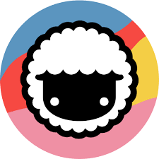

by Taskade Inc. · AI-Powered Project Management & Team Collaboration
Taskade combines tasks, projects, mind maps, docs, and team chat in one unified AI-powered workspace. Its AI Agents can autonomously run research, generate content, and complete project tasks on your behalf — making it the most agentic project management tool available.
AI Agents as teammates: Taskade's most distinctive feature is its AI Agent system. You can create custom AI agents — each with its own persona, instructions, and tools — and assign them to projects. Agents can research the web, write docs, generate tasks, and collaborate with human teammates. It is like having an AI employee inside your project management tool.
Founded in 2019, Taskade began as a flexible task and project management tool that unified multiple views (list, board, calendar, mind map, table, gantt) in one interface. As AI capabilities advanced, the team pivoted aggressively to make AI the center of the product rather than a bolt-on feature.
By 2025, Taskade's AI Agents could autonomously handle research tasks, draft project documents, generate task lists from meeting notes, and even execute multi-step workflows — all within the project workspace your team already uses. This makes it one of the most genuinely agentic productivity tools outside of dedicated coding assistants.
2025–2026 Update: Taskade launched "Agent Teams" — groups of specialized AI agents that collaborate on complex projects. A research agent gathers data, a writing agent drafts content, and a review agent fact-checks — all orchestrated automatically. The platform also added native video calling and improved Gantt chart functionality.
Create custom AI agents with specific roles, instructions, and tool access. Assign them to projects to autonomously research, write, and manage tasks alongside human teammates.
Orchestrate multiple specialized agents working together. A research agent, a writing agent, and a review agent collaborate sequentially on complex deliverables.
Switch between List, Board (Kanban), Calendar, Mind Map, Table, and Gantt views for the same project. All views are real-time synced across your team.
Built-in team messaging and video calls — no need for a separate Slack or Zoom subscription for small teams. Chat is contextual to each project and task.
Create rich documents, meeting notes, and wikis within your project workspace. AI can generate, summarize, and rewrite any document on demand.
Automate recurring project processes: meeting agenda generation, weekly status reports, task creation from Slack/email, and project kickoff documentation — all triggered automatically.
AI agents can browse the web to gather research, fact-check content, and pull real-time data into your project documents — no copy-pasting from browser tabs.
Full-featured apps on Web, macOS, Windows, iOS, and Android. All data syncs in real-time. Offline mode available for mobile task management.
| Plan | Price | AI Agents | Members | Storage |
|---|---|---|---|---|
| Free | $0 | 1 agent | Unlimited (limited) | 1 GB |
| Starter | $8/mo/user | 3 agents | Unlimited | 5 GB |
| Plus ⭐ | $16/mo/user | Unlimited agents | Unlimited | 50 GB |
| Business | $40/mo/user | Unlimited + Agent Teams | Unlimited | 500 GB |
Annual billing saves ~20%. The Plus plan at $16/user/month is the sweet spot for most small-to-mid teams, offering unlimited AI agents and 50 GB storage — significantly cheaper than Notion ($16) or Monday.com ($19+) with far more AI capabilities.
| Feature | Taskade | Notion | Asana | Monday.com |
|---|---|---|---|---|
| AI Agents | Core feature | Limited | ||
| Mind map view | ||||
| Built-in video chat | ||||
| Gantt chart | (need plugin) | Best-in-class | ||
| Free plan | AI included | Limited | Limited | Trial only |
| Starting paid price | $8/mo/user | $10/mo/user | $10.99/mo/user | $9/mo/user |
Taskade is the most AI-forward project management tool available in 2026. The AI Agent system is genuinely differentiated — no other mainstream PM tool lets you create custom autonomous agents that work alongside your human team inside the same project workspace.
For startups, freelancers, and small teams who want an all-in-one workspace (tasks + docs + chat + video + AI), Taskade offers exceptional value at $8–16/user/month. It is not a replacement for enterprise-grade tools like Asana or Monday.com for large organizations with complex reporting needs.
Recommended for: Startups, SMBs, solopreneurs, freelancers, content teams, and any team wanting AI agents integrated directly into their project workflows.
Not recommended for: Large enterprises needing advanced resource management, compliance reporting, or deep ERP integrations. For those needs, Asana, Monday.com, or Jira are better fits.